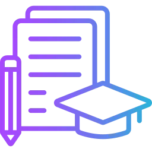

«¡Hola, mundo!», soy Eduard Gomà
Desarrollador enfocado en Frontend & Automatización
Actualmente en España / Remoto
Proyectos
Ver mis proyectos recientes
🚀

Tecnologias
Developer Path
Feb 21 - Mar 21
Front-end developer en La Llucana
Creacion de nuevo codigo y mantenimiento del mismo usando Vue.js y Firebase.
Jun 20 - Sep 20
Desarrollador web en Ammartec
Desarrollo y creación de la pagina web corporativa. Hecha con la tecnología Laravel
Soft Skills & Exp
Jun 22 - Jun 25
Food & beverage attendant en Gold Coast, Australia
Gestion de eventos y servicios atencion al cliente.
Set 23 - Jun 25
Mozo de mudanzas
Encargado de trasladar, cargar, descargar y organizar objetos de una vivienda a otra de forma segura y eficiente.
Sobre mí
Mi camino en la tecnología empezó creando webs de Clash of Clans. Desde entonces, mi formación no ha parado, pasando por dos Grados Superiores y un Diploma de IT en Australia.
Aunque no cuento con experiencia profesional previa, mi mentalidad es la de un eterno estudiante. He dedicado cientos de horas a proyectos personales y automatizaciones en n8n. Aprendo rápido y que sé trabajar bajo presión.
Estoy 100% motivado por dar mis primeros pasos en un equipo profesional donde pueda aportar mi capacidad de comunicación, mi experiencia internacional y todas mis ganas de picar código.
¿Conectamos?
Estudios
Ver mis estudios
🚀
